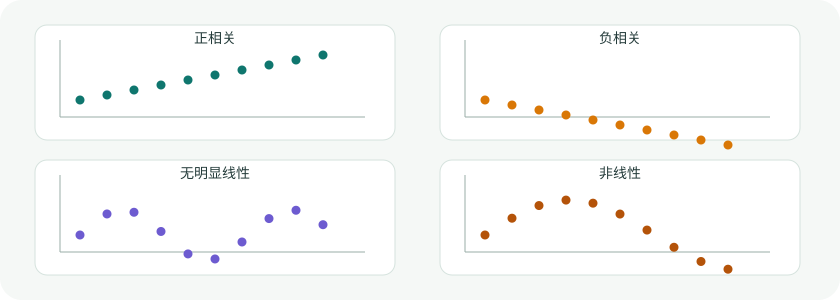

气温升高时，冰淇淋销量通常也会上升。但这能证明气温导致销量上升吗？相关分析描述变量如何共同变化，却不能单独排除季节、客流等第三个因素。
想象一下：如果你能分析出用户的年龄和购买金额之间的关系，你就能更好地针对不同年龄段的用户做推荐；如果你发现气温和冰淇淋销量高度相关，你就能根据天气预报来安排进货量。相关分析的妙处在于：它不需要复杂的数学模型，就能给你直观而深刻的洞见。

13.1 Pearson相关系数：线性相关的度量
Pearson相关系数（通常记为 r）是最常用的相关系数。它的取值范围是 [-1, 1]：
- r = 1：完全正相关——一个变量增加，另一个也成比例增加。
- r = -1：完全负相关——一个变量增加，另一个成比例减少。
- r = 0：没有线性相关——但要注意！r = 0 并不意味着没有关系，只是没有线性关系。
判断相关性强弱的经验法则：|r| ≥ 0.7 为强相关，0.3 ≤ |r| < 0.7 为中等相关，|r| < 0.3 为弱相关。
13.2 Spearman秩相关：单调关系
Spearman秩相关系数（Spearman's rank correlation）是 Pearson 的非参数版本。它不关心原始数值，而是把数据转换成秩次（rank）——也就是排序的位置。然后计算秩次之间的 Pearson 相关系数。
Spearman 的好处是：
- 不要求数据服从正态分布。
- 可以捕捉单调关系（不一定是线性，只要一直增加或一直减少）。
- 对异常值不敏感。
13.3 Kendall τ：另一种秩相关
Kendall's τ（tau）是另一种基于秩次的相关系数。它的计算基于"一致对"和"不一致对"的概念：随机抽取两个数据点，如果它们的两个变量的大小顺序一致（一个变量大另一个也大），就称为一致对；否则是不一致对。
Kendall τ 的优点是它的统计性质更好——它的分布更接近正态分布，在小样本下比 Spearman 更可靠。缺点是计算复杂度高一些（在非常大的数据集上可能较慢）。
| 相关系数 | 类型 | 适合的数据 | 对异常值敏感 | 需要正态性 |
|---|---|---|---|---|
| Pearson r | 参数 | 连续、线性关系 | 很敏感 | 是 |
| Spearman ρ | 非参数 | 连续/有序、单调关系 | 不敏感 | 否 |
| Kendall τ | 非参数 | 连续/有序、单调关系 | 不敏感 | 否 |
13.4 相关矩阵与热力图
在实际数据分析中，我们常常需要同时看多个变量之间的相关关系，这时候相关矩阵（correlation matrix）和热力图（heatmap）就派上了用场。
下面是用 Python 计算相关系数并绘制热力图的完整代码：
import numpy as np
import pandas as pd
import matplotlib.pyplot as plt
import seaborn as sns
from scipy import stats
# 生成模拟数据
np.random.seed(42)
n = 200
data = pd.DataFrame({
'age': np.random.normal(35, 12, n),
'income': np.random.normal(15000, 5000, n),
'education_years': np.random.normal(14, 3, n),
'satisfaction': np.random.normal(7, 1.5, n),
})
# 人为加入一些相关关系
data['income'] = data['income'] + data['education_years'] * 800 # 教育和收入正相关
data['satisfaction'] = data['satisfaction'] - data['age'] * 0.03 # 年龄和满意度负相关
# == 1. 计算 Pearson 相关系数 ==
pearson_r, pearson_p = stats.pearsonr(data['education_years'], data['income'])
print(f"教育年限与收入的 Pearson r = {pearson_r:.3f}, p = {pearson_p:.4f}")
# == 2. 计算 Spearman 秩相关系数 ==
spearman_r, spearman_p = stats.spearmanr(data['education_years'], data['income'])
print(f"教育年限与收入的 Spearman ρ = {spearman_r:.3f}, p = {spearman_p:.4f}")
# == 3. 计算 Kendall τ ==
kendall_tau, kendall_p = stats.kendalltau(data['education_years'], data['income'])
print(f"教育年限与收入的 Kendall τ = {kendall_tau:.3f}, p = {kendall_p:.4f}")
# == 4. 相关矩阵与热力图 ==
corr_matrix = data.corr(method='pearson') # 可选 'spearman', 'kendall'
print("\n相关矩阵:")
print(corr_matrix.round(3))
# 用 seaborn 绘制热力图（如果环境支持图形显示）
# plt.figure(figsize=(8, 6))
# sns.heatmap(corr_matrix, annot=True, cmap='RdBu_r',
# vmin=-1, vmax=1, center=0,
# square=True, linewidths=0.5)
# plt.title('变量相关矩阵热力图')
# plt.tight_layout()
# plt.show()13.5 相关不等于因果（经典案例）
另一个著名的例子：冰激凌销量与溺水人数的相关系数很高。是因为吃冰激凌让人容易溺水吗？不是。其实是因为天气热的时候，吃冰激凌的人多，去游泳的人也越多，而游泳的人多了，溺水的人数自然上升。这里的混淆变量是"气温"。
为什么相关不等于因果？主要有以下几个原因：
- 遗漏变量/混淆变量：可能存在第三个变量同时影响两个观测变量（如上面的气温例子）。
- 反向因果：可能是 B 导致了 A，而不是 A 导致了 B。比如收入高的人更健康——但到底是收入高导致了健康，还是健康的人更容易赚到高收入？
- 纯粹的巧合：在大数据中，总能找到一些听起来很荒谬但统计上显著的相关关系。
相关分析是探索性数据分析的利剑，但它不是终点。如果你想进一步量化一个变量如何影响另一个变量，并且控制其他变量的影响，就需要进入下一章的话题——回归分析。
下一章，我们将从最简单的回归模型开始——简单线性回归。我们来看看如何找到那条"最佳"的直线。
CORE RELATION
本章核心关系
样本相关系数取值在 −1 到 1 之间，描述线性关联的方向与强度，不代表因果效应。
相关系数的方向与强度
调整 r，区分正相关、负相关和接近零的线性关联；不要据此推断因果。
教学模拟：用于理解概念与方向，不替代真实数据分析、正式功效计算或研究设计审查。
TAKEAWAYS
本章要记住的三件事
- Pearson r 衡量线性关联，接近 0 不代表不存在非线性关系。
- Spearman 与 Kendall 基于秩次，适合单调关系和有序数据。
- 相关系数对异常值敏感；计算前先画散点图并检查数据结构。
FURTHER READING
延伸阅读与核对来源
参考来源用于核对概念与方法。涉及具体数据、历史细节或行业案例时，应回到原始研究或官方文档逐项核验。